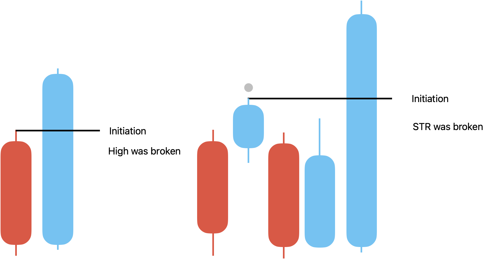
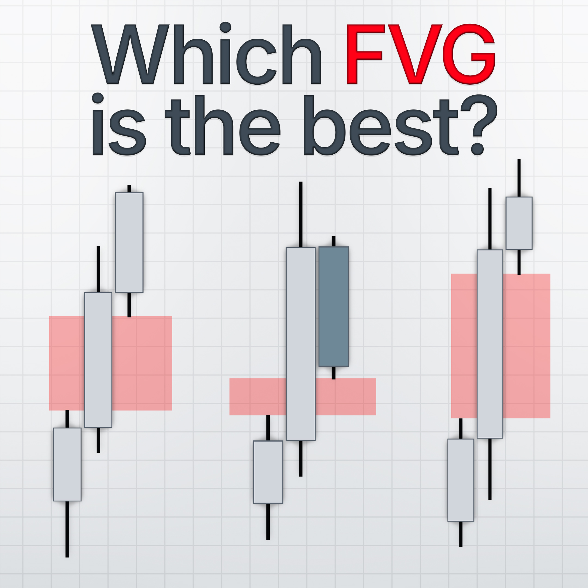

CE01 / CE02 - Causal Fair Value Gap Events
CE01 spots expansion on bar 2. CE02 confirms a preserved gap on bar 3.
Bar 2 is the chart anchor, while eventTimestamp is the bar where the event becomes usable.
00 Core Concept
A Fair Value Gap is a three-candle story. Bar 1 provides the reference boundary, bar 2 anchors the event on the chart, and bar 3 decides whether the imbalance is actually preserved.
bar 1 = reference boundary bar 2 = anchor bar / event position bar 3 = confirmation bar


Step 1 - Separate chart anchor from decision time contract
Bar 2 is where the FVG belongs visually. For CE records this is anchorTimestamp. The event only becomes usable at eventTimestamp.
CE01 eventTimestamp = bar 2 close CE02 eventTimestamp = bar 3 close anchorTimestamp = bar 2
Step 2 - Keep CE01 and CE02 independent event family
CE02 does not require CE01. If bar 2 is a doji or inside bar but bar 3 preserves a true gap, the engine still emits the confirmed FVG.
01 Payload Contract
CE events share the Layer 2 event envelope and then add FVG-specific fields. The implementation exposes this through FvgEvent.to_dict().
eventId eventCode eventName eventGroup = CE timeframe tier = null side direction eventTimestamp causalAvailableAt anchorTimestamp sourceBarIndexes sourceCandleRefs metadata price
type = rally | drop subType # CE01 only pivotTimestamp # CE02 compatibility alias for bar 2 gapTop # CE02 only gapBottom # CE02 only gapSize # CE02 only bar1Timestamp bar1High bar1Low bar2Timestamp bar2Open # CE01 only bar2Close # CE01 only bar3Timestamp # CE02 only
pivotTimestamp is not the decision time for CE02. It is the bar 2 anchor alias. eventTimestamp is bar 3 close for CE02.02 CE01 Expansion Spotted
CE01 fires on bar 2 close when bar 2 closes beyond the bar 1 range. This is a primitive expansion observation.
Discretionary idea bar 2
A candle closes outside the prior candle boundary. The tape shows expansion, but the FVG is not confirmed yet.
Algorithm mapping _try_expansion
The engine compares bar2_close to bar1.high and bar1.low. If neither boundary is broken by close, no CE01 is emitted.
subType: expansion_up / expansion_down engulfing_rally / engulfing_drop gap_up / gap_down
03 CE02 FVG Confirmed
CE02 fires on bar 3 close when the gap between bar 1 and bar 3 is preserved by wick. All three bars are closed, so the event is causal.
Discretionary idea bar 3
The imbalance is real only if bar 3 does not trade back into the bar 1 boundary. The gap zone is the empty space between bar 1 and bar 3.
Algorithm mapping _try_confirm
Rally FVG uses bar3.low > bar1.high. Drop FVG uses bar3.high < bar1.low. The engine then checks min_gap_size.
rally gap: gapTop = bar3.low gapBottom = bar1.high drop gap: gapTop = bar1.low gapBottom = bar3.high
04 Algorithm
The implementation lives in ultrab/src/ultrab/core/smc/candleEvent.py. A sliding three-bar window emits CE02 first, then CE01, so one incoming bar can close a confirmation story and begin a new expansion story.
# FvgEventEngine.on_bar() def on_bar(self, row: pd.Series) -> list[FvgEvent]: self._bar_index += 1 current = _BarSnapshot(...) emitted: list[FvgEvent] = [] # CE02 first: current bar is bar 3 if self._bar1_ref is not None and self._prev is not None: ce02 = self._try_confirm(self._bar1_ref, self._prev, current) if ce02 is not None: emitted.append(ce02) # CE01 second: current bar is bar 2 if self._prev is not None: ce01 = self._try_expansion(self._prev, ts, open_, high, low, close) if ce01 is not None: emitted.append(ce01) self._bar1_ref = self._prev self._prev = current return emitted
# FvgEventEngine._try_expansion() if bar2_close > bar1.high: fvg_type = "rally" elif bar2_close < bar1.low: fvg_type = "drop" else: return None sub_type = _classify_sub_type( fvg_type, bar1.high, bar1.low, bar2_open, bar2_high, bar2_low ) return FvgEvent( event_code="CE01", event_timestamp=bar2_ts, bar2_timestamp=bar2_ts, sub_type=sub_type, source_bar_indexes=[bar1.index, self._bar_index], )
# FvgEventEngine._try_confirm() if bar3.low > bar1.high: fvg_type = "rally" gap_top = bar3.low gap_bottom = bar1.high elif bar3.high < bar1.low: fvg_type = "drop" gap_top = bar1.low gap_bottom = bar3.high else: return None gap_size = gap_top - gap_bottom if gap_size < self.min_gap_size: return None return FvgEvent( event_code="CE02", event_timestamp=bar3.timestamp, bar2_timestamp=bar2.timestamp, pivot_timestamp=bar2.timestamp, gap_top=gap_top, gap_bottom=gap_bottom, gap_size=gap_size, )
# FvgEvent.to_dict() payload = { "eventId": self.event_id, "eventCode": self.event_code, "eventGroup": "CE", "timeframe": self.timeframe, "tier": None, "side": self.side, "direction": self.direction, "eventTimestamp": self.event_timestamp, "causalAvailableAt": self.causal_available_at, "anchorTimestamp": self.anchor_timestamp, "sourceBarIndexes": list(self.source_bar_indexes), "sourceCandleRefs": list(self.source_candle_refs), "type": self.fvg_type, }
05 Config
The current runtime exposes only a small CE config surface. The event definition stays broad; tuning weak FVGs is deferred until replay evidence justifies tightening.
# ultrab/src/ultrab/replayer/config.yaml candlestick_events: enabled: true min_gap_size: 0 display: event_log: true chart_markers: false
# FvgEventEngine.__init__() def __init__(self, config: dict[str, Any] | None = None) -> None: cfg = config or {} self.min_gap_size = float(cfg.get("min_gap_size", 0.0)) self.timeframe = cfg.get("timeframe") self._bar_index = -1 self._prev = None self._bar1_ref = None
06 Open Issues
CE02 can fire without CE01 when bar 2 is inside/doji but bar 3 preserves a real imbalance. This is intended.
FVG mitigation, quality scoring, and higher-timeframe context remain Layer 3 work, not Layer 2 work.
If weak FVGs are noisy, first tune min_gap_size; only then consider impulse filters such as ATR or relative body size.
Use these CE records as inputs to Layer 3 semantic lifecycle normalization for S/D zones and Evidence Compiler candidates.
The active CE emitter uses the canonical event-stream envelope, but replay/UI adapters still carry legacy aliases such as tf, event_code, decision_ts, and anchor_ts. Keep them only as compatibility fields until the frontend consumes canonical names directly.